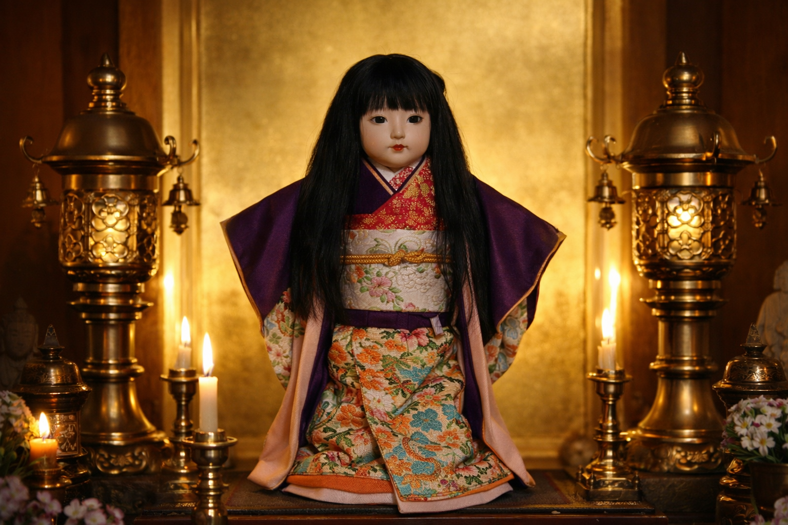
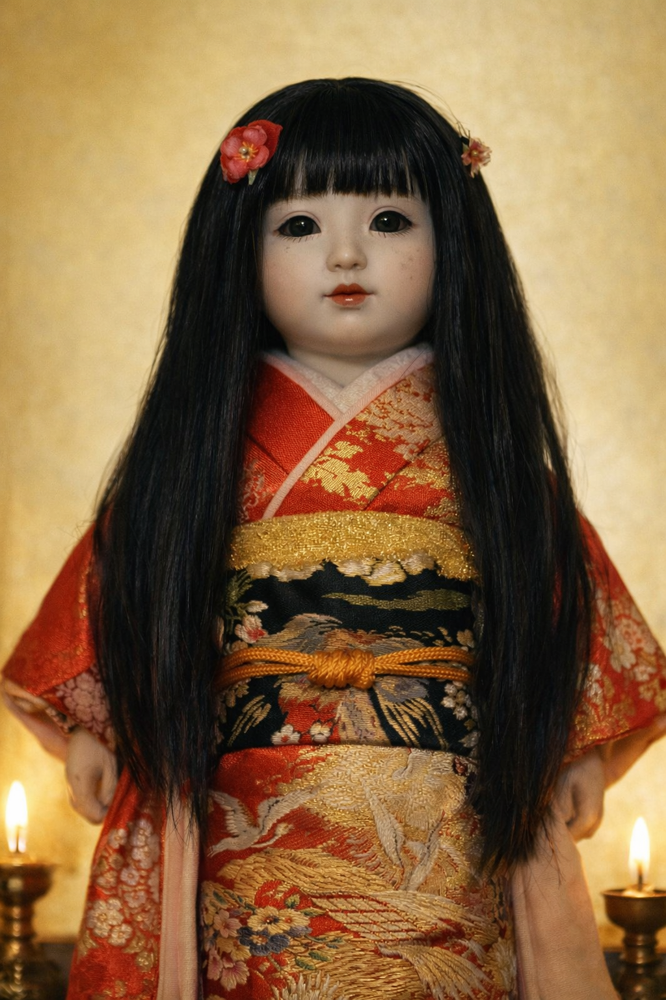

Artistic Interpretation of the Okiku Doll based on historical descriptions.
For decades, stories of haunted dolls have occupied a strange place in folklore. Some are treated as ghost stories, others as cautionary tales, while a few have become famous enough to enter popular culture. Yet among the many legends that continue to circulate around the world, one story from Japan remains particularly unsettling. In the world of Haunted dolls, the names of Annabelle and Robert have been popular around the world through books,films and countless retellings. And yet in Japan, exists a haunted doll said to grow hair, which eventually reached her knees after the owner's death .The Okiku Doll(Okiku Ningyō) is a famous piece of Japanese folklore featuring 40cm traditional doll wearing the traditional japanese garment Kimono with a short bob haircut named Okappa, whose hair reportedly continues to grow hair on it's own.
Origin.
Around the 1900s, a 17-year old Eikichi Suzuki purchased a traditional ichimatsu doll for his two year old sister Kikuko ,often now referred as Okiku. The doll wore a colorful Kimono and had a short bob haircut called Okkappa.Okiku adored it and quickly got attached to it, rarely leaving her out of sight. As the time passed , the bond between the child and her treasured companion grew stronger. Tragically, the following year little Okiku fell seriously ill. Most account state she died from pneumonia after catching a severe cold, although some versions of the story claim it may have been yellow fever. Whatver was the cause, the loss devastated the Suzuki family.
The doll that had once accompanied Okiku through her daily life remained behind, becoming one of the family's most treasured reminder of the child they had lost. In their grief, the family decided to place the doll on their household altar as a memorial to Okiku ,where it remained among offerings and prayers dedicated to her.
The Cremation Ceremony
In Japan the Cremation ceremonies traditionally include a farewll ritual known as Wakare. Before the body enters the cremation chamber, the family members and close friends gather for a final goodbyes and condolences. During the ceremony the loved ones may place burnable items, letters flowers or meaningful keepsakes these are called fukusōhin (副葬品), alongside them on their journey into the afterlife and serve as a final gesture of love and remembrance.
Some versions of the Okiku legend suggests that the doll was meant to be cremated alongside the child. But some versions of the story states the family must have forgotten it in their grief . Others spectaculate that the crematory must have not permitted it due to the materials it was made of. However, for reasons that remain unclear, it was left behind and instead they chose to place upon the family's altar, where the events that would later give rise to the legend are said to have begun.

The Hair Growth Mystery.
Every day, the family prayed near the altar. Some months later, they began to notice something strange. The doll's short bob haircut, which had originally been cut straight across just below the ears, now appeared to be reaching her shoulders. The family was surprised and came to believe that Okiku's spirit was residing within the doll.One Japanese folklore belief known as Tsukumogami suggests that spirits can inhabit or enter objects. Rooted in Shinto animism, it holds that everyday objects, upon reaching roughly one hundred years of age, can gain a soul and become self-aware yōkai (spirits or supernatural beings).As time passed, the doll's hair reportedly continued to grow. The family entrusted the doll to Mannenji Temple, where it remains to this day.
Present Day
Today, the Okiku doll remains permanently enshrined at Mannenji Temple, Iwamizawa, Hokkaido, Japan, where it has been cared for since 1938. The family left the doll behind in 1938 . It is believed they were relocating , possibly due to the events surrounding World War II and couldn't take with them. And because dolls are highly respected in Japanese culture,"doll funerals" or temple entrustments are a proper way to part with them. But that's not the END. The reports suggest that even after decades the doll continues to grow hair. The priests traditionally perform a ceremonial haircut whenever the doll's hair is said to have significantly, a bizarre legend that exists today. Locals state that the Haircut Ceremony of the doll takes place every year on March 21st out of respect for the spirit of the doll. Others claim one of the Priests dreamed of the little child's spirit , where she asked him to trim her hair back to her short bob cut and how the Haircutting Ritual of the doll started.
Now adding to this eerie mystery, the visitors and tourist who visit her claim that the doll's mouth is slowly opening to show-off her set of teeth which is said to be sproutting out just like a little child with tiny white bumps resembling human baby teeth. The visitors and tourists also claim clicking pictures of the doll or touching her wooden box in which she is placed is strictly forbidden so the mystery always remains half till this day.
Facts and Folkore.
Now, traditional ichimatsu dolls were actually made using human hair. The hair was applied by taking a long strand of real hair, folding it in half, and gluing or pinning the bent middle part into a small hole in the doll's scalp. Over time the glue loosened the hair from the scalp which can lead to lossen strands of the doll's hair which can look like the hair is growing. Additionally, materials like toso- a paste of wood and glue and gofun (crushed oyster shells) were used in the making of Ichimatsu dolls, and eventually because of seasonal shifts in temperature and humidity, especially in Hokkaido causing the material to expand and contract. These micro-shifts could loosen the bindings of the scalp , letting it extend over time.
More than a century after Okiku's death, the doll remains one of Japan's most famous supernatural legends. Whether viewed as a paranormal mystery, a cultural tradition, or a piece of enduring folklore, the story of the Okiku Doll continues to fascinate visitors from around the world.